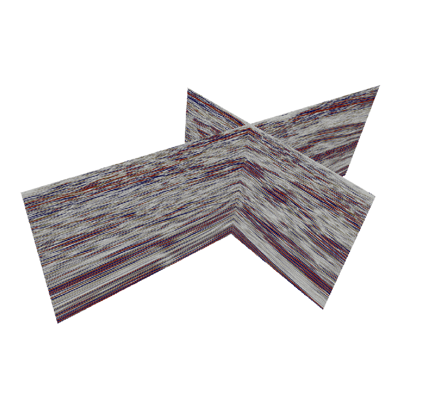

Notre offre
Analyses de données
Intelligentes
Geolearn utilise des technologies de valorisation des données d'avant-garde comme l'apprentissage superficiel et profond (deep learning) ainsi que les géostatistiques pour trouver les modèles qui vous permettront de résoudre les problématiques de vos projets en géosciences.
Visualisation
de données
Une image vaut mille mots, comme le dit si bien le proverbe. Pourquoi vous contenter de rapports et de tableaux quand vos données et résultats pourraient être visualisés de manière interactive.
Nous pouvons vous aider
à exploiter leur plein potentiel.
Solutions
SaaS
Geolearn produit des solutions logicielles sur mesure de traitement et d'interprétation de données incluant, au besoin, des interfaces de visualisations interactives.
Démocratisation
du savoir
Vous avez des besoins de formation en apprentissage automatique, en géostatistiques ou en programmation python appliquée aux géosciences? Nous pouvons y répondre. Notre équipe est dédiée au partage de la connaissance. Surveillez nos apéros qui encouragent le réseautage dans le milieu des géosciences!
Nos Réalisations
-

- 
-

-

Analyse de données sismique
classification automatique de faciès, clustering 2D/3D, interpretation automatique de failles/fractures, inversion stochastique bayésienne et plus
Analyse des diagraphies de forage
prédiction de diagraphies, clustering, classification automatique des faciès et plus
Analyse d'images géophysique aéroportée
augmentation de la resolution des cartes geophysiques aéroportées par IA; extraction des images d'intêret par apprentissage profond et plus
Applications développés
Predikor (description automatique des images de carottes de forages), Unbox (linéarisation automatique des photos des forages)
À propos
Geolearn a été fondé à la fin de 2016 et depuis, plusieurs étapes ont été atteintes.
Copyright © 2017-2022 Géostack. Tous droits réservés